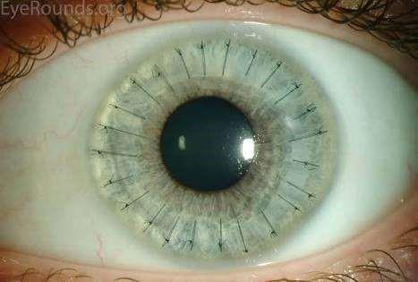

Cornea · Keratoplasty
Keratoplasty (Corneal Graft)
Excision of the diseased opaque affected part of the cornea and its replacement by a clear corneal graft.
Types:
- Lamellar keratoplasty: means transplantation of the superficial corneal layers (half-thickness) in superficial opacity.
- Penetrating keratoplasty: means transplantation of all the corneal layers.
Indications:
- Optical: to improve vision in corneal opacities and Keratoconus.
- Therapeutic: Resistant, chronic dendritic ulcer, corneal fistula.
- Structural (Tectonic): to restore the continuity of the cornea as after excision of a pterygium or symblepharon.
Contraindications:
- Untreated glaucoma.
- Anterior uveitis.
- Xerosis.
- Neuroparalytic keratitis.
- Deep Vascularization.
The graft should be:
- Free from local ocular pathology.
- Free from infectious diseases (AIDS and hepatitis virus).
Complications:
- Operative: lens injury, vitreous loss, hemorrhage.
- Postoperative: infection, rejection of the graft.
